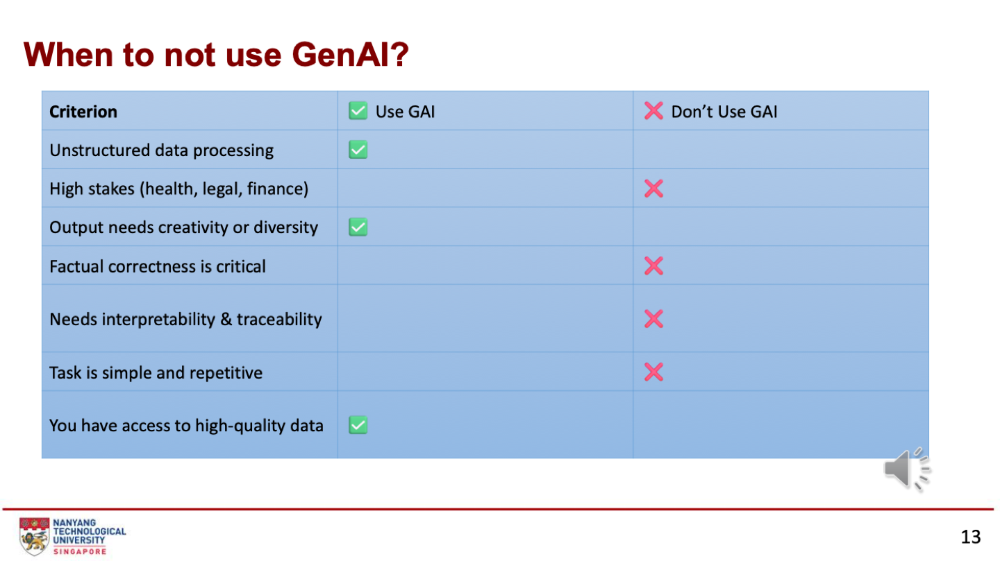
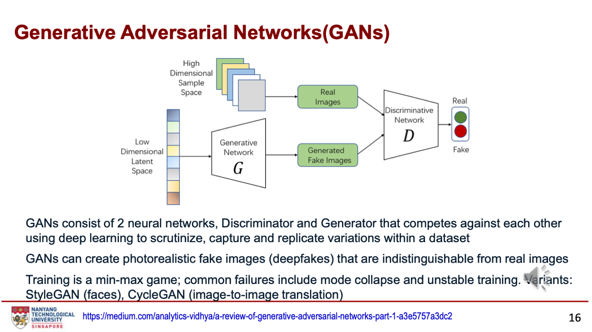

第六周：生成式 AI
生成式 AI 学习数据的分布，再造出新的数据。本周先讲什么时候该用、什么时候不该用，再讲四类生成模型（GAN、VAE、扩散、Transformer），然后是 LLM 的预训练、适配（SFT、RLHF、LoRA）、prompt、RAG、幻觉和评估，最后是训练成本、能耗和伦理。
What is Generative AI?｜定义、应用、Seedance 2.0、AI Agents
本章图表 / 方法：GenAI 定义与各模态例子；用途；Seedance 2.0 案例四页；AI agents（第 3–9 页）。
定义：学习数据背后的模式和结构，再用它创造新数据。2020 年代初因基于 Transformer 的深度学习而爆发。
| 模态 | 例子 |
|---|---|
| LLM | ChatGPT、Copilot、Gemini |
| 图像 | Stable Diffusion、Midjourney、DALL-E |
| 音乐 | ChucK、Jukedeck、MorpheuS |
| 视频 | SORA、RunwayML、Make A Video |
| 3D | 计算机辅助设计 |
用途：数据稀缺时做数据增强；编程助手、药物发现、3D 环境；AI agents 自动完成订票、购物、建活动；多模态模型（GPT-4o、Gemini、Claude）一个模型处理文本、图像、音频；RAG 让 LLM 基于外部知识、减少幻觉。
案例：Seedance 2.0（ByteDance，2026 年 2 月）
- 是什么：统一的多模态视频生成模型，一次生成 4–15 秒、最高 1080p 的视频，输入可以是文本、图像、音频、视频或任意组合。
- 原理：双分支扩散 Transformer（DB-DiT），音视频一起生成。四种输入编码到共享的潜在空间；视频分支去噪画面（结构、运动、镜头），音频分支去噪声音（对白、音乐、音效），两分支每一步通过跨模态注意力交换信号，玻璃碎的画面和声音落在同一毫秒；最后用 RLHF 微调提示忠实度、运动真实感和音画同步。
- 能做什么：一个 12 秒片段里 3–4 个镜头切换且角色一致；原生音频，8 种以上语言口型同步；导演级控制（推拉摇镜、构图、光线）；最多 9 张参考图、3 段视频、3 段音频；物理合理性更好；Fast 版本 30 秒内出片。
- 意义：前沿视频模型不再只有美国（还有 Kling、Sora 2、Veo）；版权是最大约束，真人演员深伪视频引发法律威胁，全球推出被暂停，加了 IP 过滤和 C2PA 水印；先在东南亚和拉美通过 CapCut 上线，美国暂不开放；来源证明（provenance）正在变成基础设施。
- 讨论题：如果在营销流程里用 Seedance 2.0，第一条广告发出前公司需要哪些管控？
AI agent：感知环境、做决定、采取行动以达成目标的系统（软件或机器人），能自主完成任务、从经验学习。现代 agent = LLM + 工具 + 记忆 + 规划。风险：被用于诈骗、抢票。
GenAI vs Predictive AI｜什么时候该用、什么时候不该用
本章图表 / 方法：生成式与预测式 AI 对比；该用 / 不该用的四类场景与七项标准表；企业 GenAI 用例排名；Gartner 2025 AI 技术成熟度曲线（第 10–15 页）。
| 生成式 AI | 预测式 AI | |
|---|---|---|
| 做什么 | 创造新数据 | 做预测 |
| 擅长数据 | 非结构化（文本、视频、音频） | 结构化、时间序列 |
| 用例 | 写文案、生成代码、设计、合成数据 | 欺诈检测、需求预测、客户流失 |
| 局限 | 幻觉、碳排放大、重训贵、难删除敏感数据、难解释 | 放大数据偏差、依赖历史数据、难解释、过拟合、分不清相关和因果 |
| 该用 GenAI | 不该用 GenAI |
|---|---|
| 大规模生成内容：商品描述、邮件回复、代码补全（效率高、边际成本低） | 准确性、可靠性或法律精确性关键：报税、医疗建议、法律合同（会幻觉、不确定） |
| 非结构化输入 → 结构化输出：总结客服记录、把音频变成待办（比规则系统强） | 需要事实完整性：新闻、学术引用（可能编造来源） |
| 需要个性化或变化：个性化学习内容、动态营销文案 | 需要可追溯和可审计：金融决策、安全关键系统（黑箱） |
| 快速原型和构思：头脑风暴、起草政策、生成测试数据 | 任务简单或基于规则：分拣邮件、记录传感器数据（正则、工作流更便宜、快、安全） |


企业用例（第 14 页，ISG 2024，n = 201）：最多的是客服聊天机器人（53%），其次自动化 IT 测试（43%）、音视频内容生成（41%）、客服支持（41%）。
Gartner 2025 成熟度曲线（第 15 页）：AI Agents、AI-Ready Data 在“期望膨胀的顶峰”；Generative AI 已经滑进“幻灭的低谷”。
GANs & VAEs｜对抗网络与变分自编码器
本章图表 / 方法：GAN 结构图（生成器 G、判别器 D）；VAE 编码器-潜在空间-解码器（第 16–17 页）。


| GAN | VAE | |
|---|---|---|
| 结构 | 两个网络对抗：生成器造假图，判别器分辨真假 | 编码器把输入映射到潜在空间，解码器从潜在空间重建数据 |
| 训练目标 | 极小极大游戏：生成器想骗过判别器，判别器想识破 | 让重建结果和输入尽量接近，同时从潜在空间随机采样引入变化 |
| 特点 | 能生成以假乱真的照片（deepfakes） | 潜在空间是概率性的压缩表示，也能用来降维、学特征 |
| 常见问题 / 变体 | mode collapse（只会生成少数几种）、训练不稳定；StyleGAN（人脸）、CycleGAN（图到图转换） | — |
Diffusion Models, DiT & ViT｜扩散模型与视觉 Transformer
本章图表 / 方法：扩散的加噪与去噪；Diffusion Transformer；Vision Transformer 分类流程（第 18–20、28 页）。
Diffusion models
- 前向：在 T 步里逐步给数据加噪声，直到和纯噪声分不出来。
- 反向：用 U-Net 或 Transformer 一步步去噪，重建数据。
- Stable Diffusion：用 CLIP 文本向量作条件，在潜在空间（latent space）里运行，更高效。
Diffusion Transformer（DiT）
用 Transformer 指导去噪：① 把带噪数据当成序列处理 ② 用 self-attention 看输入的不同部分、区分信号和噪声 ③ 加入位置和时间步信息 ④ 训练目标是预测每个时间步的噪声。
Vision Transformer（ViT，分类）
不用卷积，而是把图片切成小块（patches），像词一样当成 token：
- 每个图块从矩阵展平成向量（类似词向量）。
- 加位置编码，保留每块的位置。
- 在序列前加一个分类 token（CLS）。
- 送进 self-attention 层学图块之间的关系。
- 用 CLS 的输出做最终分类。
LLM Architecture, Pre-training & Adaptation｜从预训练到 SFT、RLHF、LoRA
本章图表 / 方法：LLM 四个组件；预训练学到什么、缩放定律与涌现能力；三种适配技术（第 21–23 页）。
LLM 架构（GPT、Claude、Gemini、Llama 都基于 Transformer，2017）
- Tokenizer：把文本切成子词 token，每个 token 映射成高维向量。
- Self-attention：每个 token 看所有其他 token，判断哪些对预测下一个词重要。
- 堆叠的解码器块：通常 32 到 96+ 层，逐层细化表示。
- 输出头：输出整个词表上的概率分布。
Attention 能并行捕捉长距离依赖；RNN 只能顺序处理。
Pre-training：最贵的一步
在海量网络文本上一遍遍预测下一个 token，重复数十亿次。学到：多语言的语法、词汇和风格；书、文章、代码、论坛里的世界知识；压缩过程中附带出现的推理模式。
- Scaling laws：参数、数据和算力增加时，表现可预测地提升。
- Emergent abilities：上下文学习、多步推理、写代码等能力在规模足够大时自然出现，不是专门编程的。
三种适配技术：让预训练模型变得有用、诚实、安全
| 技术 | 做法 | 效果 |
|---|---|---|
| SFT（Supervised Fine-Tuning） | 用高质量（指令，回答）对训练 | 学会听指令，而不只是续写文本 |
| RLHF 和 DPO | 用人类偏好数据（人给成对回答排序）对齐 | 符合人真正想要的；RLHF 用强化学习，DPO 是更简单的直接优化替代方案 |
| LoRA（Low-Rank Adaptation） | 冻结底座模型，只训练小的低秩适配矩阵 | 参数高效：训练成本和内存降低 10–100 倍，单 GPU 或设备端就能微调 |
Prompt Engineering, RAG & Hallucinations｜用好 LLM
本章图表 / 方法：五种 prompt 技巧；RAG 四步流程；幻觉的四个原因与三种对策（第 24–26 页）。
Prompt engineering：设计输入，让 LLM 稳定输出高质量结果，通常比微调更划算。好 prompt 清楚、具体、有背景；要迭代：测试 → 看哪里失败 → 改。
| 技巧 | 做法 |
|---|---|
| Zero-shot | 直接把任务说清楚 |
| Few-shot | 在 prompt 里给 2–5 个输入-输出示例 |
| Chain-of-Thought (CoT) | 让模型一步步思考，推理任务表现大幅提升 |
| Role / system prompt | 预先设定角色、语气和限制 |
| Structured output | 要求输出 JSON、XML 或指定格式，方便后续程序处理 |
RAG 四步
- Embed：用 embedding 模型把文档变成高维向量。
- Index：把向量存进向量数据库（Pinecone、Weaviate、FAISS）。
- Retrieve：提问时把问题也变成向量，找最相似的 top-k 文档。
- Generate：把检索到的内容和问题一起交给 LLM，生成有依据的回答。
好处：减少幻觉、能引用来源、不用重训就能保持最新。用于企业搜索、客服、法律 / 医疗助手。
Hallucination（幻觉）
定义：LLM 生成流畅、自信，但事实错误或没有依据的内容。是已部署 GenAI 最紧迫的可靠性问题。
| 为什么会发生 | 怎么缓解 |
|---|---|
| 1. LLM 训练目标是预测看起来合理的 token，不是验证真假 | 1. 用 RAG 基于检索到的来源回答，并要求引用 |
| 2. 训练数据有错误、矛盾和偏差 | 2. 用 chain-of-thought 暴露推理过程，错误更容易发现 |
| 3. 模型用泛化的模式填补知识空白，有时填错 | 3. 护栏：事实核查、输出校验，高风险场景人工复核 |
| 4. 长文本里小错误不断累积，变成自信的错话 | — |
Evaluating Generative AI｜怎么评估
本章图表 / 方法：自动基准测试与其他评估方法（第 27 页）。
GenAI 比预测式 AI 难评估：输出开放，很少只有一个正确答案，需要多种方法互补。
| 基准 | 测什么 |
|---|---|
| MMLU | 57 个学科的多任务知识（通用能力标准测试） |
| HumanEval、SWE-Bench | 代码生成和软件工程 |
| GSM8K、MATH | 数学推理 |
| MT-Bench、Chatbot Arena | 多轮对话质量，模型两两对比 |
| 其他方法 | 优点 | 缺点 |
|---|---|---|
| LLM-as-judge：用强模型给输出打分 | 比人工便宜 | 继承评判模型的偏差 |
| Human evaluation | 金标准，能判断细节、安全、创意 | 贵、慢 |
| 任务专用指标：ROUGE、BLEU、BERTScore | 适合摘要和翻译 | — |
Data Distribution, Training, Energy & Ethics｜成本与责任
本章图表 / 方法：数据分布与流形；GenAI 帮助学习；伦理四方面；四种并行训练；LLM 能耗；三个现实矛盾讨论（第 29–36 页）。
数据分布：数据在取值范围内怎么分布（均值、离散程度、峰的个数、形状）。GenAI 学习这些特征再造出类似的合成数据，就像从分布中随机抽样。数据位于高维空间里的低维流形（manifold）上，GenAI 学的就是这个流形。
训练大模型：四种并行
| 并行方式 | 怎么分 |
|---|---|
| Data parallelism | 每个 GPU 放一份完整模型，处理不同批次的数据，再同步梯度 |
| Pipeline parallelism | 按层切开，不同层放在不同 GPU 上分阶段跑 |
| Tensor parallelism | 把单个矩阵运算切开分到多个 GPU |
| Expert parallelism | 把 token 路由给专门的专家（MoE，mixture of experts） |
大模型四种一起用。
能耗
- 训练要数千块 GPU 跑几周到几个月。最小的 7B 参数 LLM 训练至少 55 MWh（约等于 5 个美国家庭一年的用电），还不算部署和用户提问；100B+ 的前沿模型达 1,000+ MWh。
- 一次 ChatGPT 提问的能耗约是一次 Google 搜索的 10 倍。
- 对策：大科技公司在探索核能（稳定可靠、低碳、可扩展）；量化、蒸馏、更小的专用模型能把推理能耗降低 10 倍以上。
伦理
| 方面 | 问题 | 对策 |
|---|---|---|
| 偏差 | 训练数据有偏，输出延续刻板印象或歧视 | 减少偏差，保证不同人群公平 |
| 监管与安全 | 被用来写恶意软件、钓鱼邮件、宣传 | 政府和组织制定标准，确保负责任使用 |
| 隐私与数据安全 | 依赖用户数据做个性化 | 去除个人身份信息、安全存储、加密 |
| 知识产权 | 用受版权保护的材料训练 | 署名和授权问题（Seedance 就是例子） |
三个现实矛盾（第 36 页讨论题，选一个正反两面论证）
- 准确性：LLM 分诊助手不经医生审核给出医疗建议，更快更便宜、能覆盖缺医少药地区，但约 3% 的时候会幻觉。上线门槛在哪？谁来决定？
- 公平性：银行贷款定价模型很赚钱，但审计发现即使去掉受保护属性，价格仍和族群相关（代理变量泄漏）。下架？重训？公开？股东价值和公平怎么权衡？
- 可持续性：一次查询约是搜索的 10 倍能耗，训练前沿模型排放数百吨 CO₂。碳足迹由用户、部署方还是模型提供方负责？
GenAI 怎么帮你学习（第 30 页）：按你的强弱项生成材料；给初学者简单解释、给专家更多细节；做模拟、角色扮演等互动工具；检验你的理解并提供不同视角；帮你起草大纲。
Notebook · LLM Pretraining and Fine-tuning｜从零预训练 + LoRA 微调
本章图表 / 方法：CA6001_LLM_Pretraining_and_Finetuning.ipynb：字符级小 Transformer 预训练；TinyLlama-1.1B 的 LoRA 微调（Colab T4 GPU，约 15 分钟）。
Part 1：从零预训练一个小 Transformer
- 数据：Tiny Shakespeare（约 1MB 莎士比亚剧本），90% 训练、10% 验证。
- Tokenizer：最简单的字符级，每个字符一个 token（真实 LLM 用 BPE 等子词分词）。
- 模型：只有解码器的 Transformer，约 20 万参数（比真 LLM 小六个数量级，但架构相同）。上下文 128、embedding 128、4 个注意力头、4 层、dropout 0.1；用因果自注意力，每个位置只能看前面。
- 训练：随机截取 128 个字符，目标是右移一位的序列（预测下一个字符）；AdamW，学习率 3e-4，3,000 步。
- 结果：训练前生成随机乱码；训练后生成像莎士比亚的文本（有 “ROMEO:” 这类角色名、节奏对），但没有逻辑，因为模型只学到了统计模式。
x = torch.stack([data[i:i+BLOCK_SIZE] for i in ix])
y = torch.stack([data[i+1:i+BLOCK_SIZE+1] for i in ix]) # 右移一位：预测下一个 tokenPart 2：用 LoRA 微调 TinyLlama-1.1B
- 加载：4-bit 量化（nf4），权重从 16 位压到 4 位，内存省约 4 倍、质量损失小。
- 数据：约 20 条手写问答（首都、算术、编程语言等），格式
### Question: … ### Answer: …，重复 20 遍。 - LoRA 配置：r = 8（低秩更新的秩）、lora_alpha = 16（缩放）、只加在注意力的 q_proj 和 v_proj 上、dropout 0.05。
- 训练：3 个 epoch，学习率 2e-4。只训练约 400 万适配器参数（约 0.4%），11 亿原始权重一个都没动。
- 结果：微调前回答啰嗦、格式乱；微调后简短直接、按格式回答。用没见过的问题测试（西班牙首都、9 × 9），看它学到的是格式还是死记答案。
lora_config = LoraConfig(r=8, lora_alpha=16, target_modules=["q_proj", "v_proj"],
lora_dropout=0.05, bias="none", task_type=TaskType.CAUSAL_LM)
model = get_peft_model(base_model, lora_config)
model.print_trainable_parameters() # 可训练参数只占很小一部分| Part 1 预训练 | Part 2 微调 | |
|---|---|---|
| 模型大小 | 约 20 万参数（从零搭） | 11 亿参数（TinyLlama，已预训练） |
| 可训练参数 | 100% | 约 0.4%（只有 LoRA 适配器） |
| 数据 | 1MB 莎士比亚 | 20 条问答 × 20 遍 |
| T4 上耗时 | 约 3 分钟 | 约 3 分钟 |
| 学到什么 | 莎士比亚英语的统计结构 | 一种特定的回答格式 |
聊天机器人的三步：预训练（网络文本，非常贵）→ 微调（指令-回答对，用 LoRA 很便宜）→ 对齐（RLHF 或 DPO，用人类偏好）。
自测
本章图表 / 方法：按考试常见题型整理，先自己答再展开。
1. 生成式 AI 和预测式 AI 的区别？各举两个用例。
生成式创造新数据，如写文案、生成代码；预测式做预测，如欺诈检测、需求预测。
2. 下面哪些适合用 GenAI？a 报税 b 总结客服记录 c 分拣邮件 d 写个性化营销文案
适合：b、d。不适合：a（准确性和法律精确性关键）、c（简单规则任务，用正则或工作流更便宜安全）。
3. GAN 的两个网络和训练方式？常见失败是什么？
生成器和判别器，极小极大博弈。常见失败：mode collapse 和训练不稳定。
4. VAE 的结构？和普通自编码器的区别？
编码器 → 潜在空间 → 解码器。潜在空间是概率性的，从中随机采样引入变化，所以能生成新数据。
5. 扩散模型的前向和反向过程？Stable Diffusion 用什么作文本条件？
前向逐步加噪声直到变成纯噪声；反向用 U-Net 或 Transformer 逐步去噪。Stable Diffusion 用 CLIP 文本向量作条件，并在潜在空间运行。
6. ViT 怎么把图片变成 Transformer 能处理的输入？最后用什么做分类？
把图片切成小块，每块展平成向量当作 token，加位置编码；在序列前加 CLS token，最后用 CLS 的输出分类。
7. SFT、RLHF / DPO、LoRA 各解决什么问题？
SFT 让模型学会听指令；RLHF / DPO 用人类偏好对齐（DPO 更简单）；LoRA 冻结底座、只训练小适配器，大幅降低微调成本。
8. 什么是 emergent abilities？
模型规模足够大时自然出现的能力，如上下文学习、多步推理、写代码，不是专门编程的。
9. 在 prompt 里给 3 个输入-输出例子属于什么技巧？让模型“一步步思考”呢？
Few-shot；chain-of-thought。
10. RAG 四步？幻觉的原因和三种对策？
Embed → Index → Retrieve → Generate。原因：训练目标是预测合理的 token 而不是验证真假、数据有错、用泛化模式填空、长文本错误累积。对策：RAG 加引用、chain-of-thought、护栏和人工复核。
11. MMLU、HumanEval、GSM8K 分别测什么？LLM-as-judge 的缺点？
MMLU：57 个学科的知识；HumanEval：代码生成；GSM8K：数学推理。LLM-as-judge 会继承评判模型的偏差。
12. 按层把模型切到不同 GPU 上叫什么并行？每个 GPU 放完整模型、处理不同数据呢？
前者是 pipeline parallelism；后者是 data parallelism。
13. LoRA Notebook 中，TinyLlama 有多少参数被训练？r = 8 指什么？
约 400 万（约 0.4%），原始 11 亿权重全部冻结。r = 8 是低秩更新矩阵的秩。